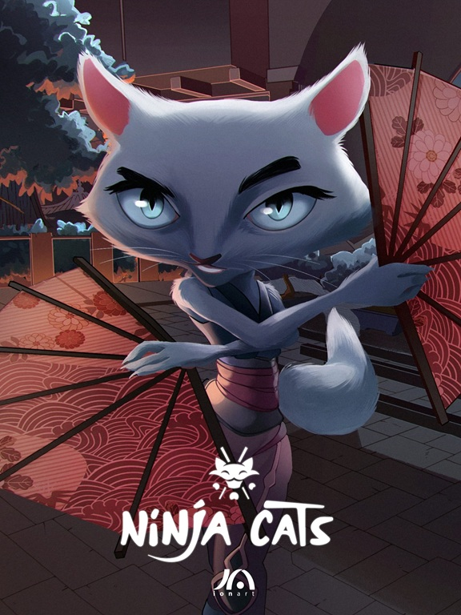

Ninja Cats
-
Client
Ionart Studios
-
Date
20-04-2024
-
Project link
- Role: Unreal Engine Generalist / Pipeline TD
- Core Stack: Unreal Engine, Maya, Version Control (Perforce), Stylized Shading, Rendering and AOVs
- Main Focus: Stylized Shader R&D, Real-Time Environment Assembly, Version Control Administration, Render Output and Color Management
This project was an in-house animated series pilot and technology demonstration designed to integrate real-time rendering capabilities into the studio's production pipeline.
My primary role was to bridge the gap between traditional 3D animation and Unreal Engine.
I developed custom stylized shaders based on original concept art, assembled the entire 3D environment using layout animations imported from Maya,
and established the technical rendering pipeline.
Additionally, I deployed and managed the version control system to enable multiple artists to collaborate simultaneously within the Unreal project.
- Stylized Shader R&D: I made and finetuned real-time, non-photorealistic shaders inside Unreal Engine to accurately replicate the artistic look and feel of the original 2D concept drawings.
- Environment Assembly Using the primary layout and animation data exported from Maya, I reconstructed, dressed, and optimized the entire production environment directly inside Unreal Engine, ensuring seamless continuity between the external animation pipeline and the real-time engine.
-
Version Control Deployment and Management
To facilitate collaborative workflow, I set up and maintained a version control system for the project.
This allowed multiple artists to work concurrently within the same Unreal project without file conflicts or data loss. -
Color-Managed Rendering and Custom AOVs
I structured the final render settings using Unreal's Movie Render Queue.
I ensured strict color management and exported custom utility passes and AOVs, providing the post-production and grading teams with the necessary control for final adjustments.